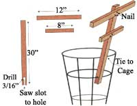
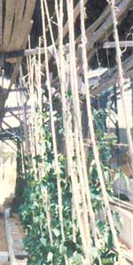

Poles and wires and your plants.
Every year, my tomatoes grow over the top of their cages. This year, I came up with an idea you might like to use as a garden tip. We use two to three extensions per cage.
-Randy N. Jones Michigan City, IN
The type of wire I associate with snow fences and sand erosion fences-two strands of wire twisted together with spaces for slats-is very useful in the bean patch. I made a frame overhead on which I fastened a length of this wire. Now I can just quickly stick my bean poles up through the slat space and rest the bottom ends on the ground. The poles stay right there, so the plants can easily find them and climb skyward. At season's end, I can easily remove the poles for storage and to allow room for re-working the soil for next year.
-Lew Rishel San Diego, CA
After washing baseball, tennis, or golf caps, the best way to dry or shape them is to position them over a partially inflated balloon. Then inflate the balloon until the cap is stretched tight across it. Tie the balloon shut and let the cap dry.
Save the water you use to boil eggs and vegetables like broccoli, potatoes, and others. After the water cools, water your house plants with it. It is filled with nutrients plants need.
When you have eaten a grapefruit half, you can use the rind for germinating seedlings. Scoop the remaining pulp out, fill the halves with soil, and then plant your seed. When you are ready to transfer your seedlings into the garden, plant them citrus halves and all. The citrus halves will decay, adding nutrients to the soil, and now the seedlings won't suffer any planting shock.
-Necoda Paitte
Windsor, NC
(See "The Rustic Temporary' Microhouse" by John Vivian, July 1998)
1. Build it in a four-foot length and width. It saves cutting the plywood.
2. A corrugated metal roof will shed snow at less than half the slope of a shingled roof.
3. If you want a second story or loft, consider a two-slope barn roof. You get more full headroom and floor space.
4. Try attaching a one-inch-thick board to the lower edge of the exposed ceiling joists for shelf space.
5. Consider replacing some roof tin with corrugated translucent fiberglass for a low-cost sky light.
6. Arrange for the sink gray water to water the garden or strawberry barrel.
7. Put a plastic barrel under a floor trap door for storage.
8. Consider a 12V electrical system that can be recharged from your car or truck.
9. For the walls, consider a plywood 2 x 4 box beam with diagonal bracing. It can be made extremely long. Nail and glue plywood to the frame.
-John Nix Foley, MN
Send your tips and hints to Mother Earth News, P. 0. Box 129, Arden, NC 28704, or contact us via our e-mail address at MEarthNews@ aol.com. Please send along a photo of yourself and your phone number, so that we can tell you when your tip will appear.
|
 Use _? x _? stock (bamboo is good) and adjust size as needed to support your burgeoning tomato plants |
 |
|